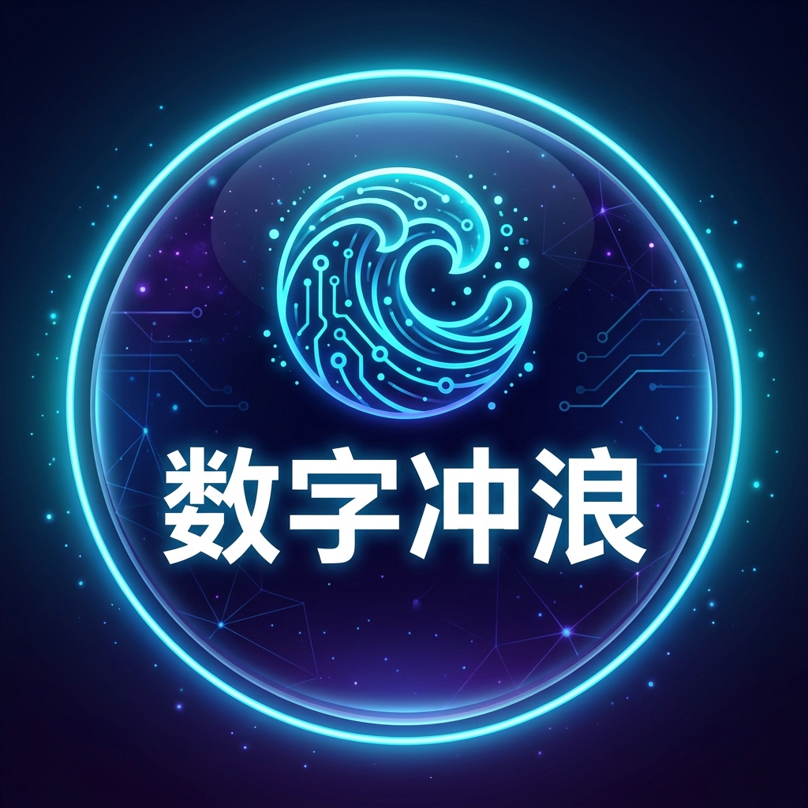

数字冲浪 - 性价比与平价视角
（适合预算有限的学生党/轻度用户）
🔍
✕
✈️ 机场推荐 (13库)
🌙
🔖
📂 分类资源库
👉 点击标签切库 | 手机可左右滑动
🌟 首页全量 (53库)
✈️ 机场推荐 (13库)
🤖 AI探索 (8库)
📝 折腾记录 (6库)
🤍 建站优化 (6库)
🔄 订阅转换 (6库)
🧪 机场测试 (13库)
📱 科学上网 (4库)
💻 技术干货 (6库)
🛠️ 实用工具 (4库)
✕
作者：
浪网官方技术团队
•
2026年08月最新全面指南
✕
✉️
联系博主与在线留言
获取 2026 VPN 专线优惠、机场测速收录与广告合作
📧
官方电子邮箱
lnqry8060610@outlook.com
📋 复制邮箱
✉️ 发送邮件
✈️
Telegram 交流频道
官方交流解惑
👉 直达 TG 频道 ➔
💬 提交在线留言
您的称呼 / 昵称:
联系方式 (邮箱 / Telegram):
留言或咨询内容:
🚀 立即提交在线留言
📋 最新留言记录
实时在线打卡
✕
📂 手机悬浮全量资源库菜单
全站 53 大资源库与 13 大机场分类
点击任意分类胶囊，瞬间切换首页内容流并自动平滑滚动
🌟 首页全量库 (53大资源库)
➔
✈️ 机场推荐库 (13大独立专线节点库)
➔
🤖 AI探索库 (8大 AI 交互与工具矩阵)
➔
📝 折腾记录库 (6大建站踩坑与实操避坑)
➔
🤍 建站优化库 (6大 Lighthouse 100分调优)
➔
🔄 订阅转换库 (6大在线订阅节点转换平台)
➔
🧪 机场测试库 (13大晚高峰压测与测速报告)
➔
📱 科学上网库 (4大平台客户端下载)
➔
💻 技术干货库 (6大全栈代码与架构教程)
➔
🛠️ 实用工具库 (4大日常极客必备工具)
➔
📬 联系我们 (TG官方频道与邮箱)
➔
📂 快捷切库 (53大库) ➔
📧 在线留言与邮箱 ✉️